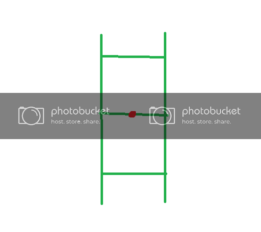
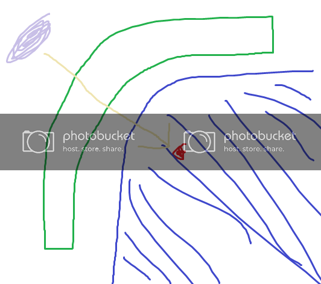
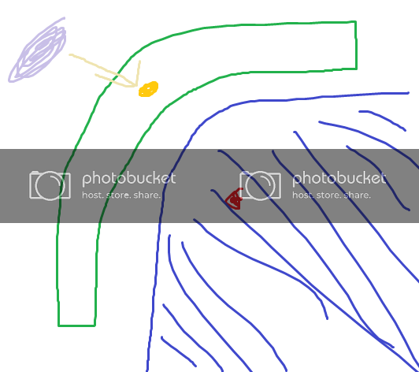

I’m guessing this is the right place for this thread, based on the sticky-posts above, but if not, my mistake.
Anyways. I’m relatively inexperienced in Hammer (Most of my experience is in the area of L4D/2, I don’t have much experience at all with the NPC system, for instance) but I generally know my way around.
One thing that I’ve read about (both here and on Valve’s Developer wiki) has been the use of info_lighting entities with props. I’d like a bit of clarification about it…
How exactly is it used? What entities can it be used on?
If it’s not too much trouble, could someone provide a visual example?
Questions might be a bit obvious/dumb/whatever, all I can really say is that I’d rather be thorough with understanding what I’m working with and what it can do as opposed to guessing and testing until I get the results I want.
Basically, props are really finnicky when it comes to lighting. Occasionally when you put a prop in certain positions in the world relative to a light source, it will be lit totally wrong, or maybe even just subtly wrong (ie, it will have the shadows and highlights in the wrong places. You’ll know it when you see it; it’s very obvious even if it’s not a huge difference and the human mind naturally understands what looks real or not).
Of course, the Source engine doesn’t understand that it’s wrong, but as a level designer with eyes, YOU know. So, the solution is to use info_lighting. Basically what it does is, if an info_lighting is specified by a prop, the prop will pretend that its origin is at the position of the info_lighting, and then it will sample its lighting from THAT point instead. Messing around with it can fix your lighting issues, since a different point could possibly generate better results than where the prop is originally.
EDIT: Here’s a quick example of one possible lighting error that info_lighting may be useful for.
Let’s say that for whatever artistic reason, I wish to place this pipe model as shown:
We’re going to have some issues since the pipe’s origin is basically buried in that worldbrush over there, as shown in the top view. This will cause Source to think that the pipe should be darkened, since the worldbrush blocks line of sight from the light entity to the prop’s origin, which means no light ever “reaches” the prop.
The result is that this ends up making the model’s lighting look unnatural and weird:
So in comes info_lighting to the rescue, like so:
By placing the info_lighting outside the worldbrush, and then linking it to the pipe prop, I just instructed Source to act as if the pipe’s origin is where the info_lighting is, which means the pipe’s lighting should be sampled from the info_lighting’s coordinates instead of the origin of the prop_static.
Now, light is free to reach the newly-defined “center”, so the prop can now be lit correctly.
I’ll demonstrate using some crappy thrown-quickly together paint images.
Imagine you have a generic prop. This could be a static prop, could be a dynamic prop, whatever. Let’s assume we’re dealing with some sort of model.

We have this prop here. The green is the actual model for our prop. The red dot in the center is its origin. Every model/prop has an origin.
Now, the big difference between brushes and props is that while a brush can receive light on all areas of any face, models on the other hand are lit from one specific point, or the origin point. In the example above, whatever light hits that red dot determines the lighting for the entire prop.
Now, if you had a light hitting your origin directly above it, then your model will compute lighting correctly, no problem.
It’s not always that easy. Take a look at this next example.

We see a slightly more complicated setup here. The green is our model, and the red is its origin. We have a light source in the top left of this setup right next to our model. The blue you see is some brush geometry that is around our prop.
This present a particular problem. Because the origin of our model is hidden from the lightsource (being that it is inside a brush), the origin receives no light and therefore the model, despite being right next to a light source, goes completely unlit.
So we have to fix this by specifying some other point as our lighting origin. We don’t want the red dot. So we do this instead.

I now add an info_lighting, as you can see in yellow. As you can see this point is in a position where it can receive light. And since the whole model samples light from this point, it gets lit.
Founded in 2004, Leakfree.org became one of the first online communities dedicated to Valve’s Source engine development. It is more famously known for the formation of Black Mesa: Source under the 'Leakfree Modification Team' handle in September 2004.